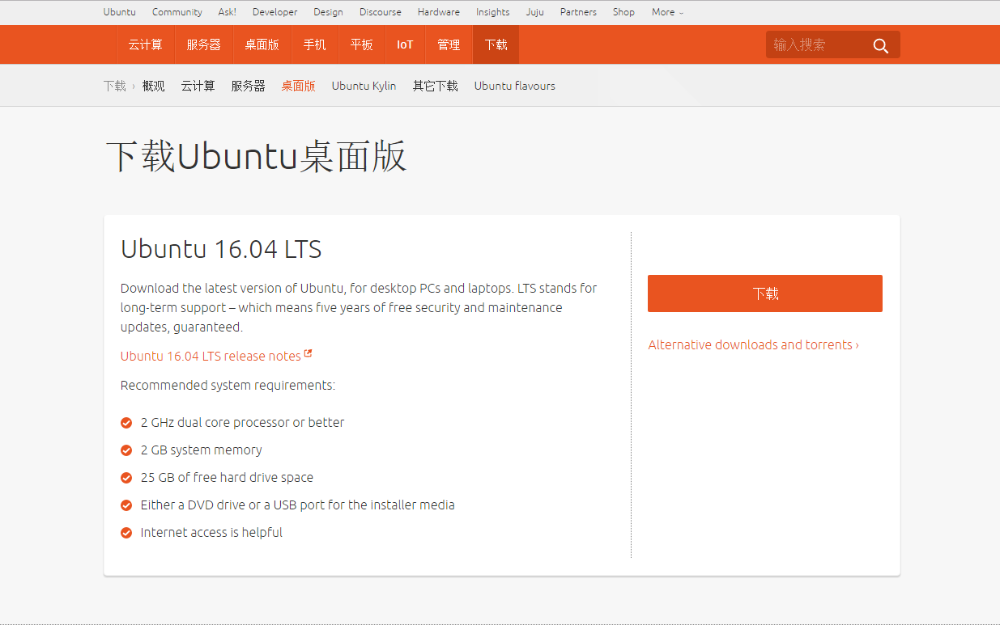
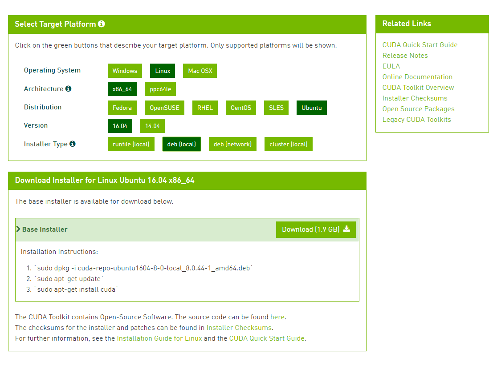

本教程不得用于任何形式的商业用途，如果需要转载请与作者SCP-173联系，如果发现未经允许复制转载，将保留追求其法律责任的权利。
如果您是高校学生或者高级研究人员，并且实验室或者个人资金充沛，建议您采用如下配置：
如果您是仅仅用于自学或代码调试，亦或是条件所限仅采用自己现有的设备进行开发，那么您的电脑至少满足以下几点：
NVIDIA GT 910、NVIDIA GTX 460 等等。HD5000,ATI 5650 等类型的显卡，那么您只能使用CPU加速NVIDIA GTX 1080,NVIDIA GTX 1070等），您只能在之后的配置中选择CUDA 8.0linux有很多发行版，本文强烈建议读者采用新版的Ubuntu 16.04 LTS
一方面，对于大多数新手来说Ubuntu具有很好的图形界面，与乐观的开源社区；另一方面，Ubuntu是Nvidia官方以及绝大多数深度学习框架默认开发环境。
个人不建议使用Ubuntu其他版本，由于GCC编译器版本不同，会导致很多依赖无法有效安装。
Ubuntu 16.04 LTS下载地址：http://www.ubuntu.org.cn/download/desktop

通过U盘安装好后，进行初始化环境设置。
终端输入：# 系统升级
>>> sudo apt update
>>> sudo apt upgrade
# 安装python基础开发包
>>> sudo apt install -y python-dev python-pip python-nose gcc g++ git gfortran vim
终端输入：>>> sudo apt install -y libopenblas-dev liblapack-dev libatlas-base-dev
如果您的仅仅采用cpu加速，可跳过此步骤 - 下载CUDA8.0
下载地址：https://developer.nvidia.com/cuda-downloads 
之后打开终端输入：
>>> sudo dpkg -i cuda-repo-ubuntu1604-8-0-local-ga2_8.0.61-1_amd64.deb
>>> sudo apt update
>>> sudo apt -y install cuda
自动配置成功就好。
终端输入：>>> sudo gedit /etc/profile
在profile文件中添加：
export CUDA_HOME=/usr/local/cuda-8.0
export PATH=/usr/local/cuda-8.0/bin${PATH:+:${PATH}}
export LD_LIBRARY_PATH=/usr/local/cuda-8.0/lib64${LD_LIBRARY_PATH:+:${LD_LIBRARY_PATH}}
之后source /etc/profile即可
终端输入：>>> nvcc -V
会得到相应的nvcc编译器相应的信息，那么CUDA配置成功了。(记得重启系统)
如果要进行cuda性能测试，可以进行：
>>> cd /usr/local/cuda/samples
>>> sudo make -j8
编译完成后，可以进samples/bin/.../.../...的底层目录，运行各类实例。
从官网下载需要注册账号申请，两三天批准。网盘搜索一般也能找到最新版。 Linux目前最新的版本是cudnn V6，但对于tensorflow的预编译版本还不支持这个最近版本，建议采用5.1版本，即是cudnn-8.0-win-x64-v5.1-prod.zip。 下载解压出来是名为cuda的文件夹，里面有bin、include、lib，将三个文件夹复制到安装CUDA的地方覆盖对应文件夹，在终端中输入：
>>> sudo cp include/cudnn.h /usr/local/cuda/include/
>>> sudo cp lib64/* /usr/local/cuda/lib64/
>>> cd /usr/local/cuda/lib64
>>> sudo ln -sf libcudnn.so.5.1.10 libcudnn.so.5
>>> sudo ln -sf libcudnn.so.5 libcudnn.so
>>> sudo ldconfig -v
在终端中输入:
>>> sudo pip install -U --pre pip setuptools wheel
>>> sudo pip install -U --pre numpy scipy matplotlib scikit-learn scikit-image
>>> sudo pip install -U --pre tensorflow-gpu
# >>> sudo pip install -U --pre tensorflow ## CPU版本
>>> sudo pip install -U --pre keras
安装完毕后，输入python，然后输入：
>>> import tensorflow
>>> import keras
无错输出即可
下载Keras开发包
>>> git clone https://github.com/fchollet/keras.git
>>> cd keras/examples/
>>> python mnist_mlp.py
程序无错进行，至此，keras安装完成。
由于作者水平和研究方向所限，无法对所有模块都非常精通，因此文档中不可避免的会出现各种错误、疏漏和不足之处。如果您在使用过程中有任何意见、建议和疑问，欢迎发送邮件到scp173.cool@gmail.com与作者取得联系.
本教程不得用于任何形式的商业用途，如果需要转载请与作者或中文文档作者联系，如果发现未经允许复制转载，将保留追求其法律责任的权利。
作者：SCP-173 E-mail ：scp173.cool@gmail.com 如果您需要及时得到指导帮助，可以加微信：SCP173-cool，酌情打赏即可